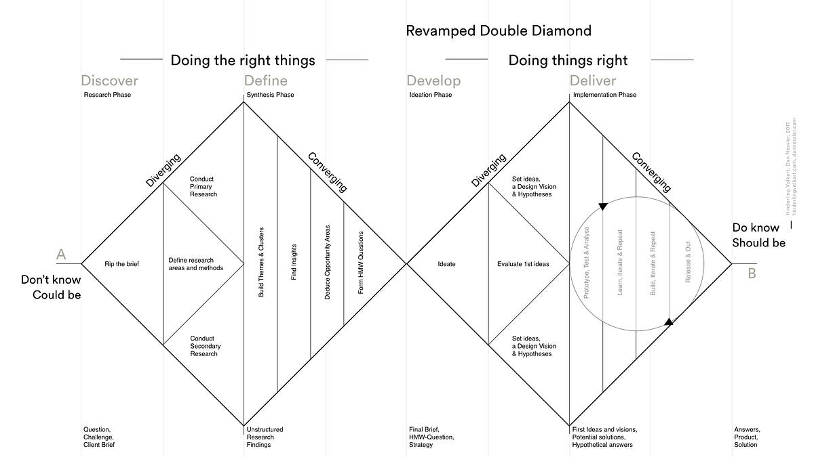
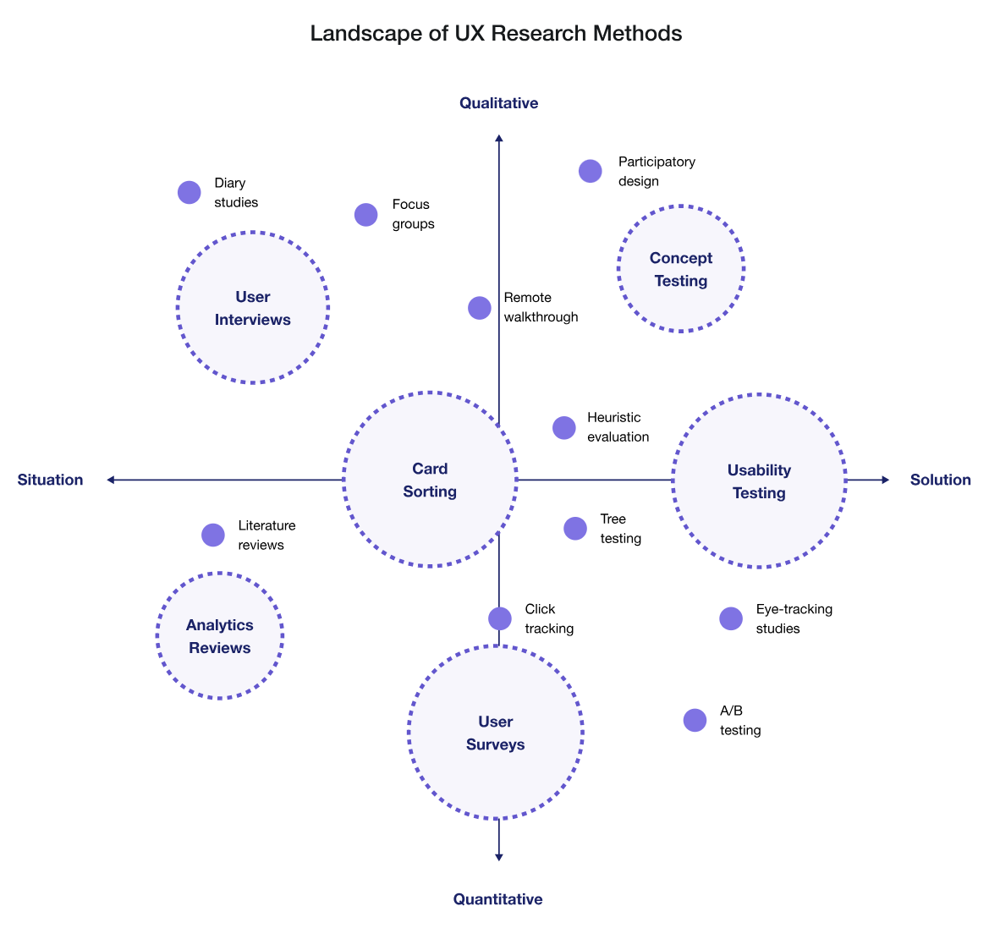
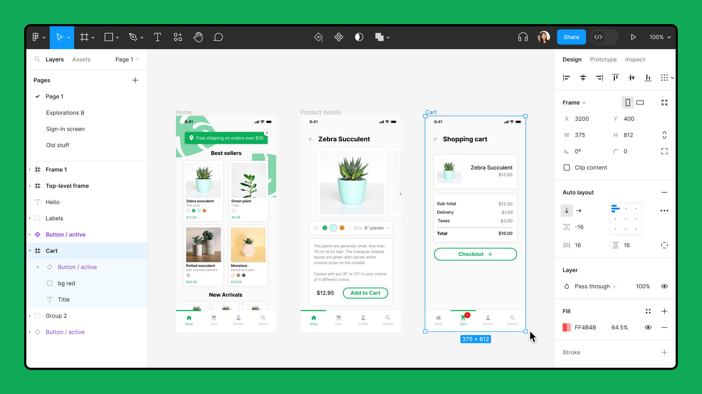
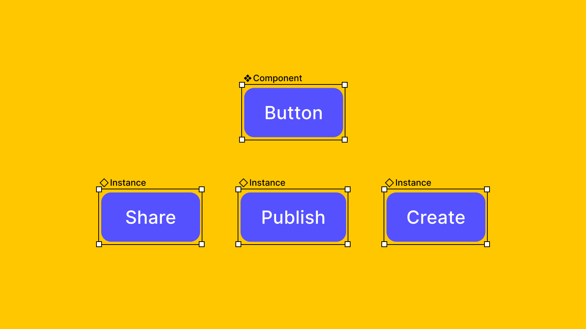
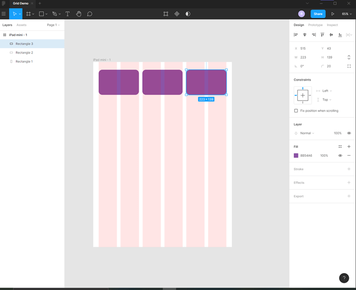
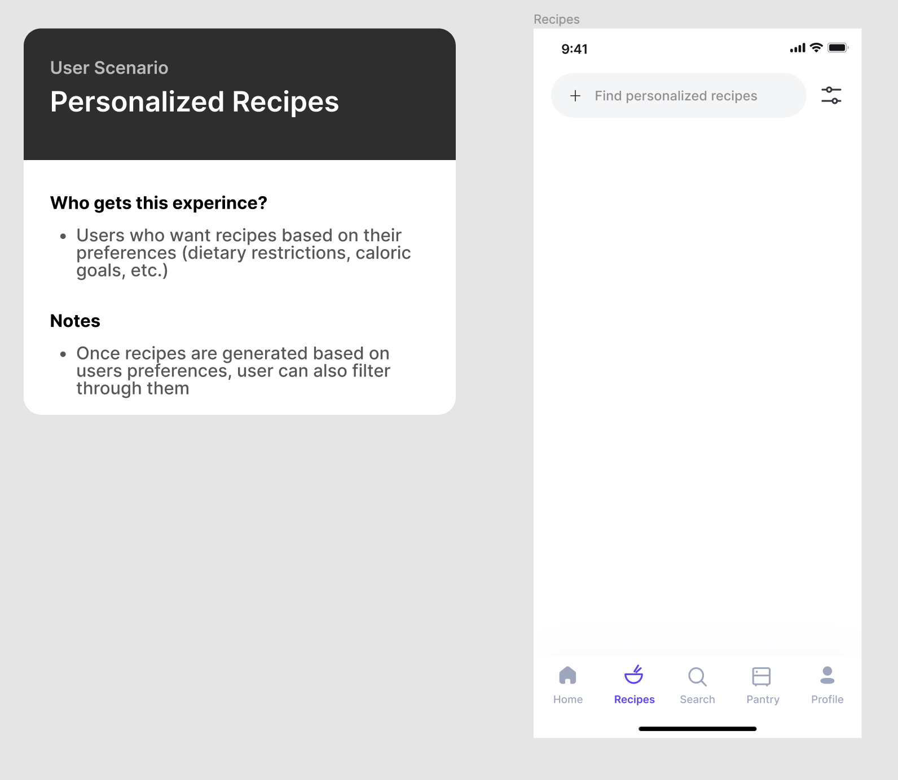

UI/UX Design Guide
Welcome to Tech Start’s UI/UX design guide, your roadmap to mastering the art of crafting user-friendly and visually appealing digital experiences!
Our goal is simple: to provide you with the tools and guidance necessary to understand the principles of effective design and apply them to your projects. Instead of overwhelming you with tutorials, we've curated a selection of online resources that cover everything from the basics to advanced techniques.
While this guide is a good starting point, there's a ton of resources available online. Everyone learns differently, so we encourage you to explore and find what methods work best for you!
Enjoy the guide and have fun designing! :)
Table of Contents
Design Process
Purpose: a design process helps you break down a project into manageable chunks and gives your work structure.
Terms like “design thinking” and “human-centered design” all boil down to the idea of understanding the needs and behaviors of users, and translating that understanding into a well-designed interface. So, keep the user front and center in your design approach!
There’s various design processes out there but we recommend using the double diamond design process.
The double diamond design process has 4 stages:
- Discover
- Define
- Develop
- Deliver
Note: this design process is not linear— it’s iterative. That means you may be revisiting certain stages to tweak and improve your designs as you work through the process.

We recommend taking a look at the following resources to get started:
Tasks to do at each stage/ Methods to use
As you make your way through the design process there’s various tasks/ methods you may use at each stage.
Discover phase:
- Competitive analysis
- User research
Define phase(at this stage you’ll be synthesizing your user research findings):
- Affinity mapping
- Empathy mapping
- Form a problem statement and How Might We (HMW) questions
- Ideate potential solutions
- Product Requirement Doc (PRD)
Note: to make your work easier, use FigJam templates to do the tasks for this phase.
Here’s some great FigJam Templates:
Develop phase:
- User flows & site maps
- Wireframes & low-fidelity prototypes
- User testing prototypes and iterating on your designs based on user feedback
Here’s some great FigJam Templates:
Deliver phase:
- High-fidelity prototypes (in Figma)
Below are some great resources to get you started with the tasks/ methods:
- Course - Covers intro to UI/UX, wireframing, prototyping with Figma
- Template - Competitive analysis
- Article - Affinity mapping
- Article - Empathy mapping
- Article - Problem statement
- Article - How Might We (HMW) questions
- Article - Product requirement doc
- Article - User flows
- Article - Sitemaps
User Research
Purpose: user research is conducted to understand user needs and preferences— it’ll ensure that your designs are intuitive and meet user expectations.
User research happens throughout the design process and there’s different methods you can use at each stage. Some user research methods provide qualitative data (like user interviews) and others may provide more quantitative data (like close-ended surveys). Choosing which research method to use depends on various things like time availability, your research goals, type of product you’re building, etc.

We recommend starting with simple methods such as surveys and user interviews.
Best practices to keep in mind for your research questions:
- Keep it short (5-10 questions)
- Keep it simple (use clear and concise language)
- Avoid leading questions
Best practices to keep in mind for user interviews:
- Use active listing techniques (build rapport with the participant, ask relevant follow-up questions)
- Record & transcribe your interviews
Here’s an example of what a good survey question may look like:
- What problems do you face while trying to do (given task)? (select all that apply)
Here’s some examples of what good user interview questions may look like:
- How do you currently go about doing (given task)?
- What do you like about how you currently perform (given task)?
- What is the biggest pain point when performing (given task)?
Below are some great resources to get started with user research:
Usability Testing
Purpose: usability testing will identify and address any usability issues— it’ll ensure your designs are intuitive and easy to use for its intended audience.
Once you have a working prototype, you’ll want to test that with users to get feedback on your designs.
With your usability testing, focus on exploratory tasks where you give users a realistic scenario and tasks to perform. For example, you could ask the user “add an item to your cart”, or “find an event to attend”. You want to see if (and where) users may get stuck doing a task— this will let you know which part of your design needs more work.
NOTE: testing with at least 5 users will give you sufficient feedback on your designs (these users can be fellow students, etc.)
Resources to get your started:
Working in Figma
Purpose: use Figma to create your low and high fidelity prototypes that you can share with your team.
Figma's official website offers a ton of learning resources to guide you on your Figma learning journey!

An important consideration as you work on your designs is to share your Figma file with your team members to get feedback on the technical feasibility of your designs.
Resources to get started with Figma:
Knowing how to use various things in Figma like: components, auto layout, and grids will help you design more efficiently.
Using Components
“Components are elements you can reuse across your designs. They help to create and manage consistent designs across projects.” - Figma

Here’s a great resource to get your stated:
Using Auto Layout
Auto layout is important for creating responsive interfaces. “It lets you create designs that grow to fill or shrink to fit, and reflow as their contents change” - Figma
Resources for learning auto layout:
Using Grids
Using grids will provide visual structure to your designs. They’ll make your designs look clean & organized.

Here’s a good rule of thumb to follow for designing layouts for different screen sizes:
- For desktops - 12 columns
- For tablets - 8 columns
- For mobile devices - 4 columns
Resources to learn more:
Other Resources
There’s various Figma plugins, UI kits, and other resources you can use to make your workflow easier.
What you use will depend on your needs & project— so feel free to find ones suited for you!
Here’s an example of a plugin for Figma:
Figma community is also a great resource for finding templates, plugins and UI kits.
Also, for a more comprehensive guide on design methods, take a look at this article.
Other Design Considerations
Where to Look for Inspiration
You might want to look at existing user interfaces to get inspiration for your own project. We recommend the following resources:
- Dribbble
- Behance
- Scope existing platforms that are similar to your app that have good UI/UX & take inspo from their designs
Design Documentation
It’s essential to document your designs. It’ll help you communicate the specifics of your designs with your team members and others.
Below is a good example of a card that documents the design of a screen. Your major screens and user flows should be documented.

Accessibility and Inclusion in Design
Here’s something important to keep in mind as you design. You want to ensure that everyone can use your designs— regardless of their abilities.
That means using colors, typography, etc. that are accessible to all users.
Here’s a great article to get started: Accessibility Guidelines for UX Designers
That’s all for now! :)